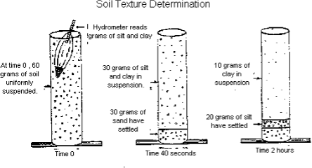
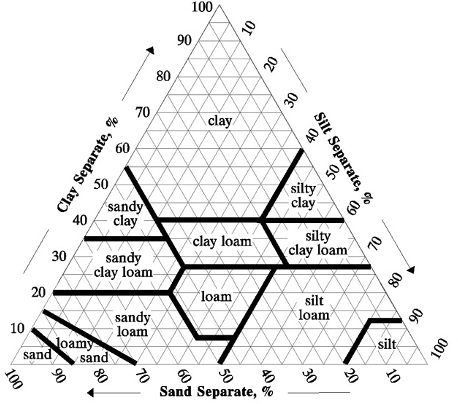

1 Soil Texture, Color, and Structure
Objectives
- Use the Bouyoucos hydrometer to determine soil particle distribution.
- Use the textural triangle to determine the soil textural class name.
- Use the texture by “feel” method to determine soil textural classes.
- Determine soil color using Munsell notation.
- Describe different soil structure characteristics and determine the horizon where most commonly found.
Key Words & Concepts
- Texture
- Loam
- Silt
- Textural Triangle
- Hydrometer
- “Feel” method
- Munsell color
- Aggregate
- Iron Oxides
- Peds
- Granular
- Platy
- Angular Blocky
- Subangular Blocky
- Prismatic
- Single-grained
1.1 INVESTIGATION A: Using a Hydrometer to Determine Particle Size
Particle size distribution has become a standard means for characterizing and classifying the fine earth fraction of solid soil particles, and is used to determine the soil texture class. This experiment uses a Bouyoucos hydrometer to measure the density (grams per L) of a liquid mixture (“slurry”) of soil and water.
Using the hydrometer allows us to determine soil texture by measuring the grams of the soil particles (sand, silt, and, clay) that remain suspended in the cylinder after a specific period of time. Different sized soil particles are separated by their different sedimentation rates – e.g. larger particles will settle faster in a column of water, while smaller particles remain suspended much longer in the solution (based on Stokes Law).
Watch this video before you start Investigation A
1.1.1 Preparation
The two cylinders in this investigation each contain 60 grams of oven-dry dispersed soil – one soil is from an E horizon and one is from a B horizon. After mixing thoroughly with a stir stick, the largest particles (sand) will quickly drop to the bottom of the cylinder. After 40 seconds, only silt and clay particles are left suspended in the water. After two hours, only clay-sized particles remain.
1.1.2 Measurements
40 Second Measurement
Carefully use the stirring rod (approximately 18 inches long with a disk on the end) to completely disperse the soil in the cylinder. This requires that you slowly lower and lift the stirring rod up and down in the cylinder until all the sediment is removed from the bottom of the cylinder.
After stirring, immediately note the time to the nearest second. Carefully and slowly insert the hydrometer (the hydrometers are extremely fragile) into the cylinder. Please refer to the figure on page 2. Note: you may need to use your finger to stop the hydrometer from bobbing.
After 40 seconds, read the number (at liquid level) on the hydrometer.
This reading must be corrected for temperature. Add 0.4 g/L for each degree above 20ºCelcius or subtract 0.4 g/L for each degree below 20ºCelcius.
2 Hour Measurement
- Due to time constraints, two hour readings will be provided in lab.

(Note: The soil in the diagram has (60-30)/60 x 100= 50% Sand; 10/60 x100= 17% Clay; 100-50-17=33% Silt)
Calculations: correct readings before calculating sand, silt, and clay!
\[ Sand (\%) = \frac{M_{sample,ovendry} - 40s reading}{M_{sample,ovendry}} x 100% \]
Results
| Measurements | Sample 1 | Sample 2 |
| Sample mass (oven-dry) | 60 g | 60 g |
| 40s reading (uncorrected | g/L | g/L |
| Temperature (C) | ºC | ºC |
| 40s reading (corrected) | g/L | g/L |
| % Sand | % | % |
| 2hr reading (uncorrected) | g/L | g/L |
| Temperature @2hr (C) | ºC | ºC |
| 2hr readng (corrected) | g/L | g/L |
| % Clay | % | % |
| % Silt | % | % |
| Summary | Sample 1 | Sample 2 |
| % sand | ||
| % silt | ||
| % clay |
1.2 INVESTIGATION B: Using the Texture Triangle
A soil’s textural class is determined by that soil’s respective content of sand, silt, and clay. The USDA textural triangle is used to classify the texture class of a soil. The sides of the soil textural triangle are scaled for the percentages of sand, silt, and clay (0-100%). Clay percentages are read along the lines from left to right across the triangle. Silt is read along the lines from the upper right to lower left. Sand along the lines from lower right to the upper left portion of the triangle. The intersections of the three sides on the triangle give the texture class name. For instance, if you have a soil with 20% clay, 45% silt, and 35% sand, it would fall in the “loam” textural class name.

Results
Using the soil particle percent data from Investigation A, determine the texture class for the soil samples 1 and 2.
| Sample | Sand % | Silt % | Clay % | Texture Class |
| 1 | ||||
| 2 |
1.3 INVESTIGATION C: Texturing Soil with the “Feel” Method
Determining texture by feel takes practice (professional soil scientists can texture soil by feel and determine the texture within five percent clay content!). The following table, chart provided in lab, and text will help you learn how to texture by feel.
| Texture | Feel |
| Coarse sand | Feels sharp, rasping, gritty, individual grains easily distinguished. |
| Fine sand | Gritty but very fine. Individual grains only just visible. Rasping sound between finger and thumb heard when placed close to the ear. |
| Silt | Dry pellets will crush between the fingers, yielding a floury dust with a smooth silky feel. When wet, the silkiness persists and the cast is slightly plastic (not very sticky). Particles are not quite visible to the naked eye. |
| Clay | Dry pellets feel very hard, and it is difficult or impossible to crush them between the finger and thumb. When moistened, it is very sticky (plastic-like consistency). |
WATCH VIDEO TUTORIAL ON IPADS!
To determine the soil texture by feel, the soil must be moistened. Add a small amount of water to the soil if needed to give it a putty-like (play-doh) consistency. Not too wet - not too dry!
Form the soil into a ball.
Try to push the soil between your thumb and forefinger to make a “ribbon” ~ 2mm thick; the longer the ribbon, the more clay there is in the soil.
Move the soil between your thumb and forefinger to determine if the soil feels really gritty, really smooth, or somewhere in between. Sand feels gritty, silt feels smooth, clay feels sticky (allows you to form ribbons).
Use the provided flow chart and suggested order below to assist in calibrating yourself.
Practicing – WASH YOUR HANDS BETWEEN EVERY SAMPLE!!!!!!! Use the known texture samples to practice texturing soil with the “feel” method.
Here is a suggested method of practicing (Nic’s method to the madness):
Start with the silt loam – you should be able to make a ribbon, but < 1”
Move to the silty clay loam – you should notice that you can get a longer ribbon, 1-2”
Move to the silty clay – you should be able to get an even longer ribbon, > 2”
In these three samples, you kept increasing clay content while decreasing sand content.
Now try the loam – you should notice that it feels like there is more sand in it than in the silt loam, silty clay loam and silty clay, but it doesn’t feel really gritty. The loam texture class should feel like equal proportions of sand, silt and clay. You should be able to make a ribbon, but < 1”.
Move to the loamy sand. This should feel much grittier and you shouldn’t be able to make a ribbon. However, the soil should form a ball without being excessively wet.
Finally move to the sand. This should feel extremely gritty and you shouldn’t be able to make a ribbon. You need to get sands excessively wet in order make a ball out of them.
Lastly, try moving from the loam to the clay loam and finally the clay. You should feel a clay increase similar to the silt loam to silty clay loam to silty clay samples, but since these all have more sand, they should feel less smooth and more like a mixture of the particle size classes.
Note: Check one box to choose between the characteristics (gritty, smooth, or gritty/smooth). For ribbon length, choose between short (<1”), medium (1-2”), or long (>2”).
| Texture | Dominated by gritty feel | Dominated by smooth feel | Equally gritty/smooth | Ribbon length |
| Silt Loam | ||||
| Silty Clay Loam | ||||
| Silty Clay | ||||
| Loam | ||||
| Loamy Sand | ||||
| Sand | ||||
| Clay Loam | ||||
| Clay |
Texture the following unknown soils and complete the table.
| Texture | Dominated by gritty feel | Dominated by smooth feel | Equally gritty/smooth | Ribbon length | Textural Class Name |
| A | |||||
| B | |||||
| C |
1.4 INVESTIGATION D: Soil Color
A Munsell description has three parts: hue, value, and chroma. The color 10YR 4/3 has a hue of 10YR, a value of 4, and a chroma of 3. Each page of a Munsell color book is a different hue. Colors are arranged on each page by value and chroma. Value is the relative lightness or darkness of the color. Higher values indicate lighter soil colors. Chroma is the strength or intensity (or grayness) of the color. Higher chromas indicate more intense colors.
Many soil colors in Minnesota are found on the 10YR page. Soils from the eastern and northeastern parts of Minnesota are redder and probably will be found on the 7.5YR pages. (Note: Pure red = 5R; Pure “orange” (Yellow-Red) = 5YR; Pure yellow = 5Y.)
Practicing- Determining soil color
We have provided eight soils for you to color. Answers are given for soils 1 to 4; practice with these. Soils A - D are unknowns; check your skills with these soil samples.
Moisten a soil sample (if already moist, do not apply more water). Apply just enough water to moisten the soil, but not so much that it glistens.
Look for the matching hue (page) in the Munsell book, starting with the 10YR page. Be sure to check the same chip on the pages before and after to make sure you have the right hue (page).
i.e., if you think that the 10YR 4/3 chip best matches the soil sample, also check the 7.5YR 4/3 (one page redder) and 2.5Y 4/3 (one page yellower) chips to make sure you have the right hue.
| Sample | Color: Munsell notation | Color: color name from book |
| A | ||
| B | ||
| C | ||
| D |
1.5 INVESTIGATION E: Soil Structure
You know about soil texture (the proportion of sand, silt, and clay particles). Now you will look at soil structure, or the ways in which soil particles (sand, silt, and clay) are held together. Soil particles are bound together into aggregates (or peds) by cementing agents (things that hold the individual sand, silt and clay particles together into larger aggregates) such as microbial gums and other kinds of organic matter, iron oxides, and clay. Additionally, some structures can result from compaction or water movement (i.e., horizontal movement or freeze-thaw).
In some cases, the soil is classified as having no structure (i.e. the individual grains are not cemented together in any natural way).
Complete the chart using lecture notes and the structural examples provided.
| Structure | Common Master Horizon | Characteristics | Possible cementing agent or process |
| Granular | A | ||
| Platy | E | ||
| Angular Blocky | B | ||
| Subangular Blocky | B | ||
| Prismatic | B |
For possible cementing agents and processes above, review the lecture slides.
| Structureless | Common Horizon | Characteristics |
| Single-grained (coarse particles) | C | |
| Massive (fine particles) | C |
Identify 3 unknown structures and the Master Horizon that they most likely came from.
| Sample | Structure | Probable Master Horizon |
| 1 | ||
| 2 | ||
| 3 |